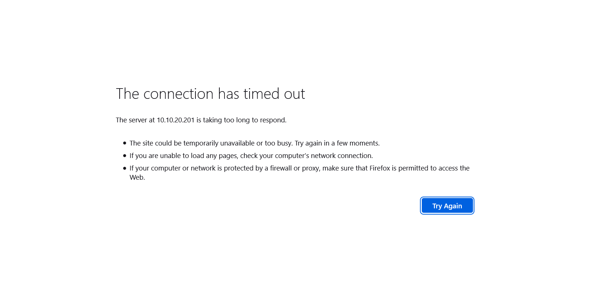
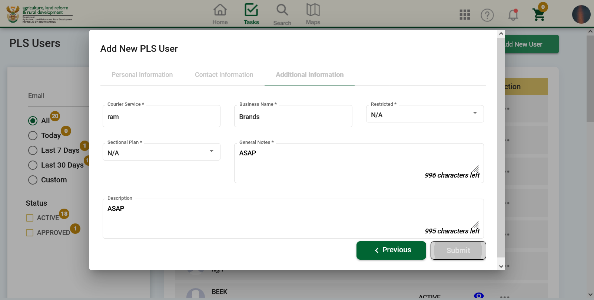
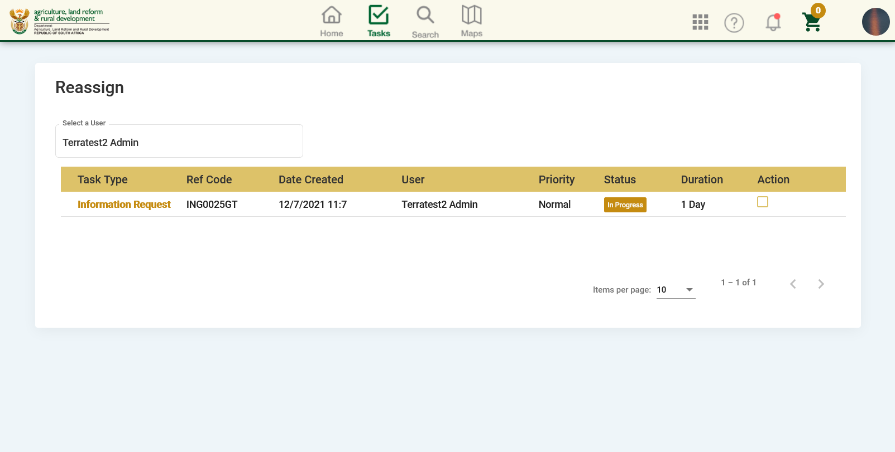
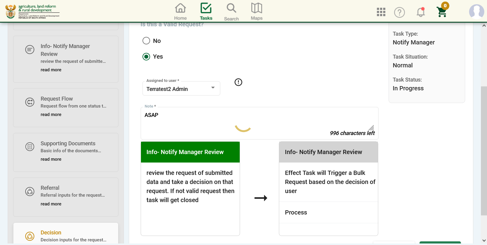
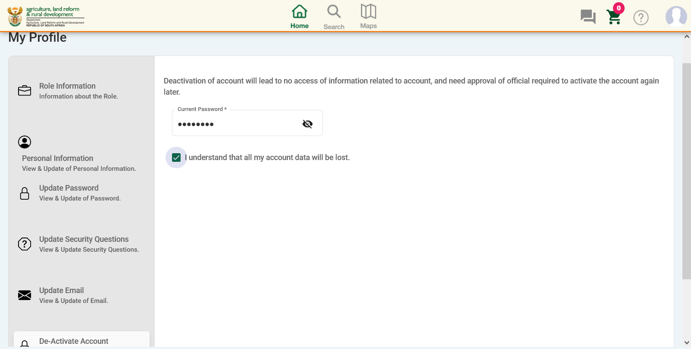

Total Tests
Total Steps
Total Time Taken (Current Run)
0h 1m 42s+488ms
Total Time Taken (Overall)
0h 1m 42s+488ms
Start
2021-07-02 10:57:54
End
2021-07-02 10:59:36
Pass Percentage
Environment
| Param | Value |
|---|---|
| User Name | Nontokozo |
| OS | Windows 10 |
| Java Version | 1.8.0_292 |
| Host Name | DESKTOP-DG687ET |
| Tester | Sello |
| Manager | Pragayanshu |
| Project | Cadastral Information System |
Tests
-
CIS_EXTERNALUSERREGISTRATION_001 pass2021-07-02 10:58:16 2021-07-02 10:58:16 0h 0m 0s+3ms
Status Timestamp Details 10:58:16 Test Passed 10:58:16 Test Case ID : CIS_EXTERNALUSERREGISTRATION_001 10:58:16 Process : Capturing details for the external registration 10:58:16 Page Reference : FRS 7.12.3 Node 2 10:58:16 Function : User Registration 10:58:16 Activity/User Interface : External User Registration 10:58:16 Test Case Description : Capturing registration details 10:58:16 Pre-requisite : User must be looged on to the system and have access to the registration page 10:58:16 Input Data : Capture Registration Details Below: Role: email: Confirm Email: Province(s): Title First Name Last Name Telephone Mobile Organisation: Sector: Address Line 1: Address Line 2: Address Line 3: Postal Code: Preferred Method of Communication: Security Question 1: Security Question 2: Security Question 3: Security Answer 1: Security Answer 2: Security Answer 3: I Agree Button Click on the "Submit" button 10:58:16 Expected outcome : The user should be able to capture all the fields and displays a validation message for all the fields that are required. 10:58:16 Additional Notes : The test cases was tested many times, we could not continue any further due to the SMTP issue 10:58:16 See Screenshot Below : -
CIS_EXTERNALUSERREGISTRATION_005 pass2021-07-02 10:58:21 2021-07-02 10:58:21 0h 0m 0s+2ms
Status Timestamp Details 10:58:21 Test Passed 10:58:21 Test Case ID : CIS_EXTERNALUSERREGISTRATION_005 10:58:21 Process : Logging in 10:58:21 Page Reference : FRS 7.12.5 10:58:21 Function : User Registration 10:58:21 Activity/User Interface : Email and System 10:58:21 Test Case Description : Creation of new password 10:58:21 Pre-requisite : The user should have access to their inbox as well as access to the system 10:58:21 Input Data : Check if email is recieved Open the system Go to profile Check personal details Capture temporary password Capture a new password Confirm New password Click on Submit button 10:58:21 Expected outcome : The user should receive an email and should be able to change the password 10:58:21 Additional Notes : Test could only be executed once since we could not use a dummy email 10:58:21 See Screenshot Below : 
-
CIS_EXTERNALCHANGEEMAIL_007 pass2021-07-02 10:58:26 2021-07-02 10:58:26 0h 0m 0s+1ms
-
CIS_EXTERNALCHANGEEMAIL_009 pass2021-07-02 10:58:32 2021-07-02 10:58:32 0h 0m 0s+1ms
-
CIS_INTERNALUSERREGISTRATION_010 pass2021-07-02 10:58:53 2021-07-02 10:58:53 0h 0m 0s+0ms
Status Timestamp Details 10:58:53 Test Passed 10:58:53 Test Case ID : CIS_INTERNALUSERREGISTRATION_010 10:58:53 Process : Capturing details for the external registration 10:58:53 Page Reference : FRS 7.13.3 Node 1 10:58:53 Function : Internal user registration 10:58:53 Activity/User Interface : Internal User 10:58:53 Test Case Description : Capturing registration details 10:58:53 Pre-requisite : The user should be logged in to the system 10:58:53 Input Data : Email: First Name: Last Name: Select Section Select Role Select Access Rights Upload Signed User Access Document Click Save button 10:58:53 Expected outcome : System to validate the user credentials on the Active Directory. If the user credentials are not validated on the active directory, the system will display a message to the user. If the user is validated then the task will be routed to the Provincial System Administrator. 10:58:53 See Screenshot Below : -
CIS_INTERNALUSERREGISTRATION_012 pass2021-07-02 10:59:15 2021-07-02 10:59:15 0h 0m 0s+0ms
Status Timestamp Details 10:59:15 Test Passed 10:59:15 Test Case ID : CIS_INTERNALUSERREGISTRATION_012 10:59:15 Process : Editing details for the external registration 10:59:15 Page Reference : FRS 7.13.3 Node 1 10:59:15 Function : Internal user registration 10:59:15 Activity/User Interface : Internal User 10:59:15 Test Case Description : The system administrator editing a users credentials and permissions 10:59:15 Pre-requisite : System Administrator is logged in and have access to the users registration details 10:59:15 Input Data : Update information captured by the user below: User details prepopulated Updated mobile 10:59:15 Expected outcome : System will send a message to the user informing them of the registration request outcome. 10:59:15 See Screenshot Below : -
CIS_FORGOT PASSWORD_014 pass2021-07-02 10:59:18 2021-07-02 10:59:18 0h 0m 0s+1ms
Status Timestamp Details 10:59:18 Test Passed 10:59:18 Test Case ID : CIS_FORGOT PASSWORD_014 10:59:18 Process : Password Recovery 10:59:18 Page Reference : FRS 7.14.3 Node 1 10:59:18 Function : Forgot Password 10:59:18 Activity/User Interface : Forgot Password 10:59:18 Test Case Description : Getting a new password in the case it has been forgotten 10:59:18 Pre-requisite : The user should access to the system 10:59:18 Input Data : Click Forgot Password link. Capture the Email Address. Answer three security questions. Capture the security code displayed (reCapture) 10:59:18 Expected outcome : The user should be able to capture the security question answers 10:59:18 See Screenshot Below : 
-
CIS_ACCOUNTDEACTIVATION(INTERNAL)_016 skip2021-07-02 10:59:23 2021-07-02 10:59:23 0h 0m 0s+1ms
-
CIS_ACCOUNTDEACTIVATION(INTERNAL)_018 pass2021-07-02 10:59:30 2021-07-02 10:59:30 0h 0m 0s+2ms
Status Timestamp Details 10:59:30 Test Passed 10:59:30 Test Case ID : CIS_ACCOUNTDEACTIVATION(INTERNAL)_018 10:59:30 Process : Internal User account Deactivation (Reassign Task) 10:59:30 Page Reference : FRS Addendum, 3.3 pg 8 10:59:30 Function : Deactivate Account 10:59:30 Activity/User Interface : Reassign task 10:59:30 Test Case Description : Reassignment of the task (Different User) 10:59:30 Pre-requisite : The user must have a reliable internet connection and access to the system link 10:59:30 Input Data : Click on the inbox Select the task Click on the 'Open Task' button Click on the 'Assign to User' Button Select the officer Click on the Submit button 10:59:30 Expected outcome : The user should be able to allocate the task to another user 10:59:30 See Screenshot Below : -
CIS_ACCOUNTDEACTIVATION(EXTERNAL)_026 pass2021-07-02 10:59:36 2021-07-02 10:59:36 0h 0m 0s+1ms
Status Timestamp Details 10:59:36 Test Passed 10:59:36 Test Case ID : CIS_ACCOUNTDEACTIVATION(EXTERNAL)_026 10:59:36 Process : External user account Deactivation 10:59:36 Page Reference : FRS Addendum, 3.3 pg 8 10:59:36 Function : Deactivate Account 10:59:36 Activity/User Interface : Deativate account 10:59:36 Test Case Description : The user will request to deactivate an account 10:59:36 Pre-requisite : The user should have the rights to request for deactivation 10:59:36 Input Data : Click on the Profile Button Select the deactivate account Click on the submit button 10:59:36 Expected outcome : The system will check if there are some pending tasks for this user and notify the user 10:59:36 See Screenshot Below :
{kind=link}
{kind=link}
{kind=link}
{kind=link}
{kind=link}
_016.png){kind=link}
_018.png){kind=link}
_026.png){kind=link}